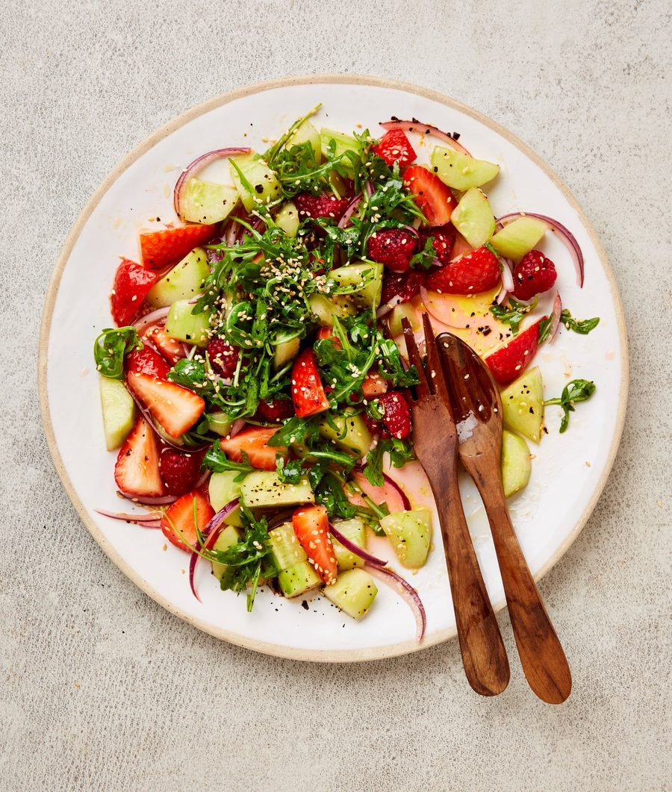

Cucumber and berry salad with urfa and sesame

This quick, refreshing salad is all I really want to eat – and “cook” – on a hot summer’s day. I’ve used seasonal summer berries here, but by all means swap them out for some stone fruit, if you prefer. Eat with a spoon, so you can lap up all the dressing.
Put the cucumber, onion, berries, both oils, lemon juice, maple syrup and a teaspoon of flaked salt in a large bowl, toss gently to combine, then leave to macerate for three to five minutes.
Transfer the cucumber mixture to a lipped platter, leaving one tablespoon of the dressing behind in the bowl. Put the rocket in the bowl, stir to coat with the dressing, then scatter on top of the cucumber and berry salad. Sprinkle over the remaining quarter-teaspoon of sesame oil, the urfa, sesame seeds and a good pinch of flaked salt, and serve.